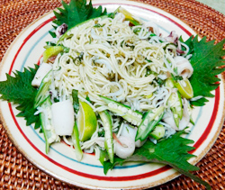

ヤリイカとシラスのジェノベーゼ
- 調理時間：30分
- （一人当たり）
- カロリー：615kcal
- たんぱく質：33.7g
- 脂質：16.1g
- 炭水化物：78.8g
- 塩分：2.1g


＜2人分＞
- カッペリーニ
(そうめんでも可) - 200g
- ヤリイカ
- 1杯(200g位)
- 釜揚げしらす
- 50g
- スダチ(くし切り)
- 1個
- フレンチドレッシング
- 大さじ２
- バジルソース(市販品)
- 適量
- ・オクラ
(茹でて縦に等分) - 2本
- ・青ネギ(小口切り)
- 10g
- ・ミョウガ
(細切りして水にさらす) - 1個
- ・青じそ
(千切りにして水にさらす) - 5枚
A


- ヤリイカは内臓、軟骨、皮をとり、洗って食べやすい大きさに切る。
熱湯に塩を加え、ヤリイカはサッとゆでる。 - Aの野菜は、下準備して、水気をしっかり切る。
- ボウルにフレンチドレッシングとお好みでバジルソースを合わせる。
- 1.たっぷりの湯でカッペリーニをゆでて、茹で上がったら③のソースで和える。
2.ヤリイカ、釜揚げしらす、Aの野菜を全てくわえて、全体をよく混ぜ合わせる。
3.器に盛り付け、スダチを添える。
ヤリイカとシラスのジェノベーゼ
夏本番。日本の夏は蒸し暑く、体に余分な熱が溜まり、水分の摂りすぎでむくみやすくなります。中医学では、食べ物の味を5つに分けており、夏は「苦味」をうまく利用して体の不調を癒すと考えます。苦味には、利尿、消炎、解毒、鎮静の作用があり、心臓などの循環器のはたらきをよくして、精神状態を鎮めます。また熱をとったり、発汗を促す食材が食養生の基本となります。バジル、ネギ、オクラやシソがそれに当たります。